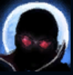
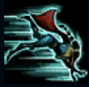
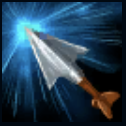
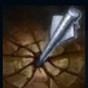
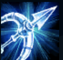

PASSIVE
Night Hunter:
Vayne mercilessly hunted the evil in the world, increased the movement speed by 30 when moving towards nearby enemy heroes.

Q
Dodge raid:
Vayne rolls a short distance, and the next normal attack within 7 seconds will cause additional physical damage.
When critically hit, the additional damage will no longer be increased.

W
Holy Silver Crossbow:
For every 2 attacks or casts on the same target, the third attack or cast will cause the target 's maximum health.

E
Demon trial:
Vayne fired a huge arrow, knocking back the enemy and causing physical damage.

R
Ultimate moment:
Vayne will gain invisibility when casting [Q Evasion Strike] for 1 second,